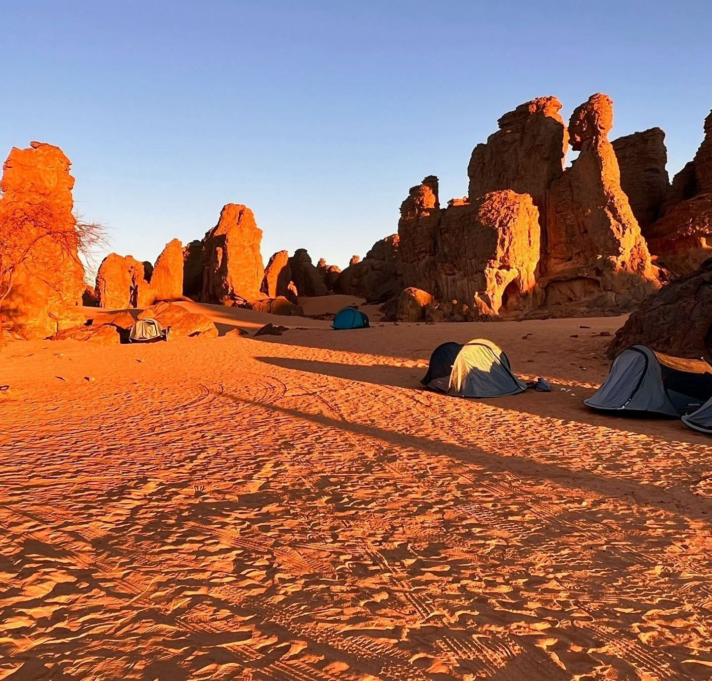
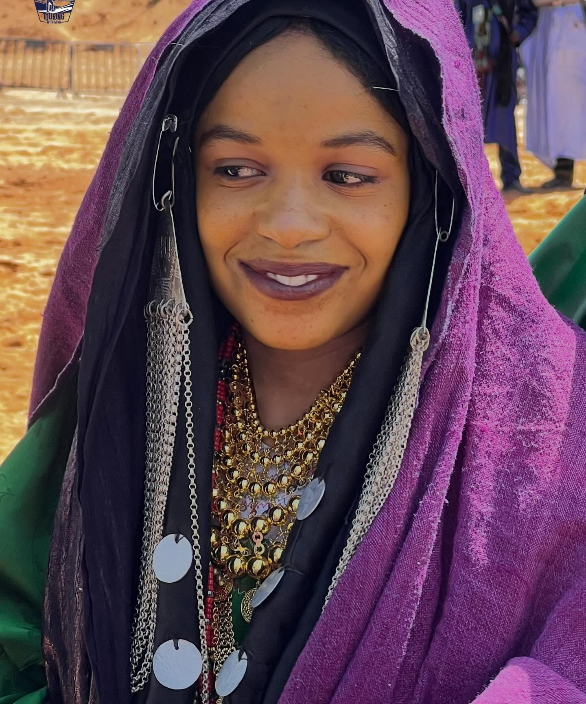

Touring with Mina, private journeys in the Algerian Sahara
Scroll
Live the desert from the inside
Private journeys in Djanet, led by an Imouhagh team who know every dune and every spring.
Djanet, the oasis at the foot of the Tassili n'Ajjer
In south-eastern Algeria, between the Tassili cliffs and the red dunes of the Tadrart, Djanet is one of the last great gateways to the Sahara. People come here to walk, listen and sleep outside.
Mina and her Imouhagh team arrange everything, from the visa to the last tea in the dunes.
Read our story


Red Tadrart
The great classic: ember-coloured dunes, sandstone arches and ancient carvings, up to the Libyan border.
View the tour
Ihrir and Essendilène
The hidden springs of the Tassili: a lake between cliffs, palm trees and Mina's favourite canyon.
View the tour
Tassili Trek
A climb on foot onto the plateau, with pack donkeys, to the stone city of Sefar.
View the tourNothing for you to organise
Everything is part of the trip, from the airport to the camp.

4x4 and desert drivers
Drivers who know every track.

Fully equipped camp
Tents, mattresses and blankets provided.

Full board
Desert cooking prepared on site.

Imouhagh guides
A Tuareg team who share their culture.

Visa assistance
We guide you through the process.

Airport transfers
Welcome in Djanet, at any hour.

“I fell in love with Djanet. I'm here to give you a trip you won't forget.”Mina
What you will see
Open the gallery





Desert journal
All articlesYour journey to Djanet starts with a message
Tell us your dates and wishes. Mina replies personally within 24 hours.